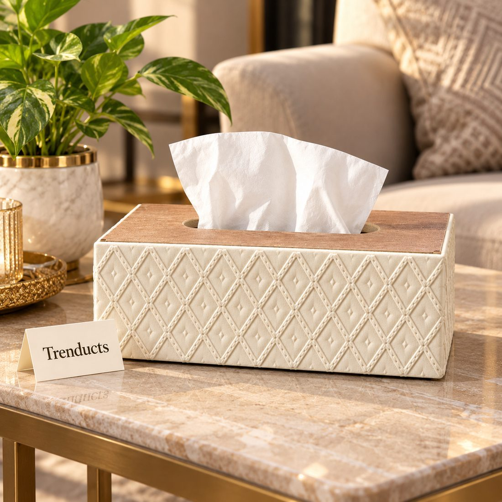
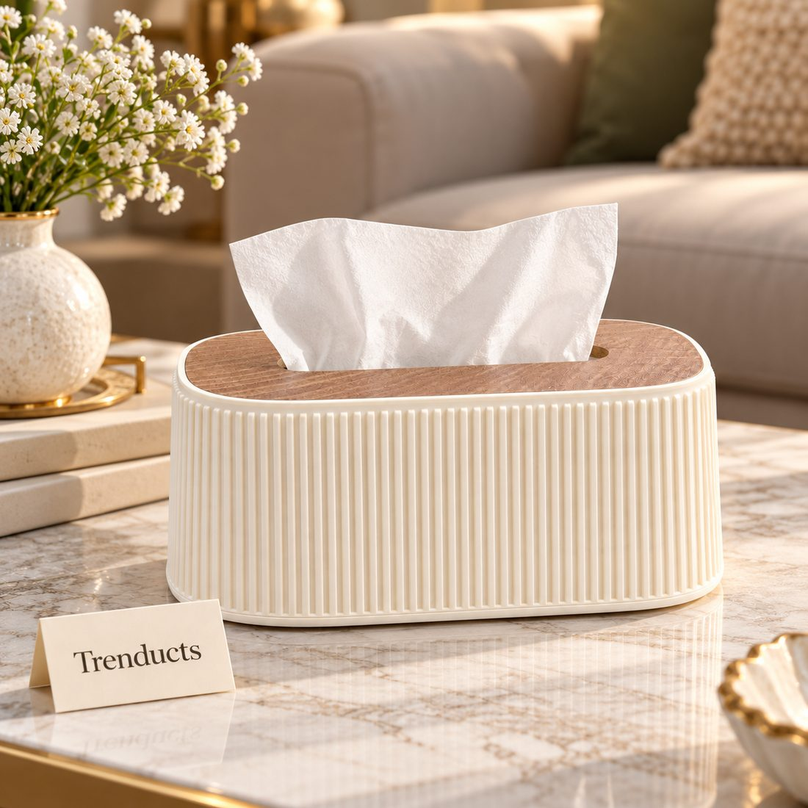
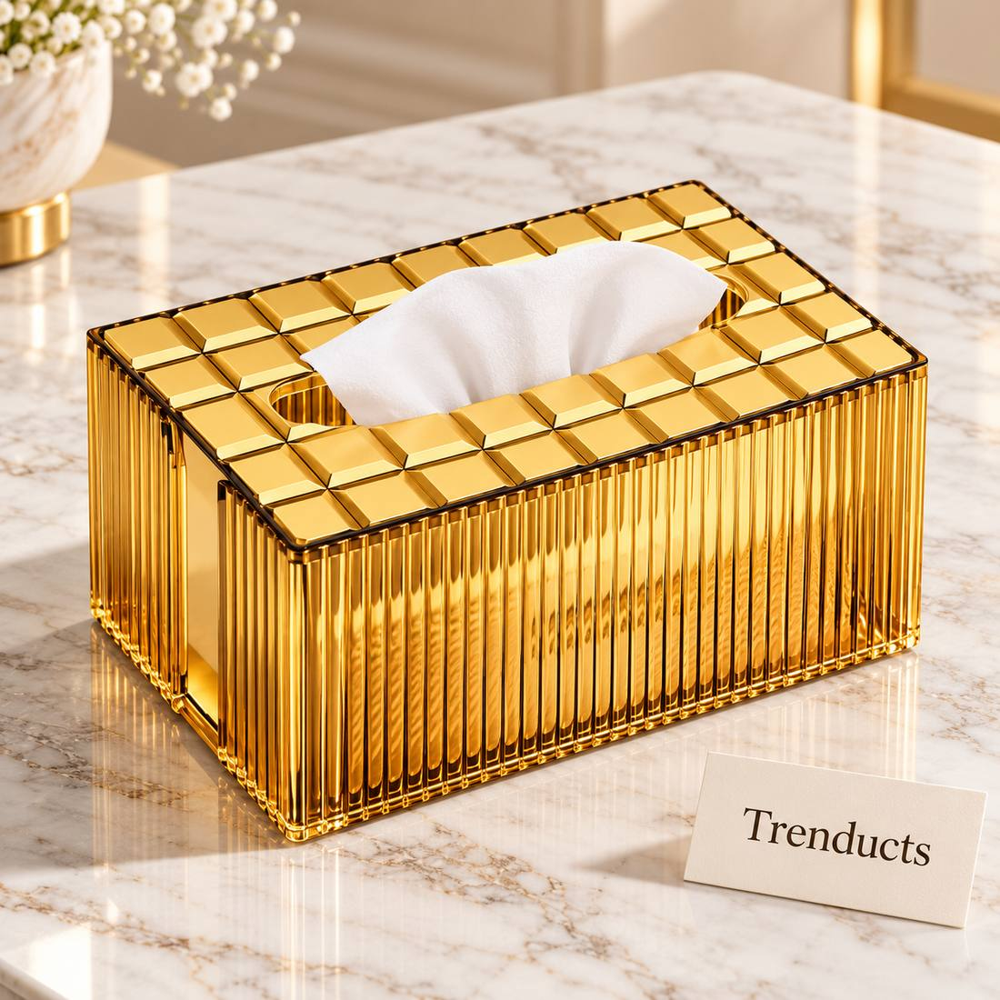

Walk into almost any Pakistani home and you will find tissue boxes in several places: on the dining table, in the drawing room, beside the bed, in the car and on the dressing table. They are essential, especially with our food, but brightly printed cardboard boxes rarely match the decor. A tissue box cover is a small, inexpensive change that makes a surprising difference to how a room looks.
Why use a cover?
- It hides the printed packaging and makes the box look like part of the decor
- It keeps tissues clean and dry, away from dust and spills
- A weighted cover stops the box sliding when you pull a tissue
- It lets you buy any brand of tissue without worrying about the look

Covers that hold the tissue box inside, rather than replacing it, are the easiest to use: just slip in a new box when one runs out.
Choosing a style for each room
The drawing room is where guests sit, so a cover there should match the furniture and colours. Gold and ribbed designs suit formal rooms with traditional sofas. Wood-look tops and geometric textures fit modern interiors. On the dining table, choose a cover that is easy to wipe, since it will get touched with oily fingers. In bedrooms, softer shapes and neutral colours keep things calm. For children's rooms, fun shapes like buses or animals make tissues more fun to use.
Size and shape
Tissue boxes come in two main shapes: long rectangular boxes and tall square cubes. Measure the boxes you usually buy before choosing a cover, as a cover that is too small is useless. Some covers are adjustable or come in both sizes.
Materials
- Resin and acrylic covers look elegant and wipe clean easily
- Wood and wood-look covers add warmth
- Leather-style covers suit cars and offices
- Metal and gold-finish covers make a statement on side tables

Avoid fabric covers on dining tables, as they stain quickly.
In the car
A tissue box in the car is a Pakistani essential, often sitting on the dashboard or the back shelf. A cover keeps it in place and stops it fading in the sun. Do not place anything heavy on the dashboard, as it can fly forward during sudden braking; a lighter cover or a holder that attaches to the seat back is safer.
Keeping covers clean
Wipe resin, acrylic and metal covers with a damp cloth and a drop of washing-up liquid, then dry. Wood-look tops should not be soaked. Check the opening now and then, since dust and crumbs tend to collect there.
Matching with other accessories
A tissue box cover works best as part of a set. Coordinate it with a tray, coasters, a vase or candle holders in the same finish. Gold accents across a few pieces create a polished look without much spending.

A practical gift
Tissue box covers are a useful gift for a housewarming or for someone who has just redecorated. They are inexpensive, practical and always used.
Quick questions
- Do tissue box covers fit every brand? Most covers are made for standard rectangular or cube boxes, but sizes vary. Measure the box you usually buy before ordering.
- How do I refill a cover? Most covers either lift off from the top or slide open from the bottom. Slip in a new box, pull the first tissue through the slot and close it.
- Are decorative covers practical on a dining table? Yes, if they are made of a wipeable material like resin, acrylic or metal. Avoid fabric on dining tables.
- Which finish suits a traditional drawing room? Gold, brass and ribbed finishes usually blend well with carved furniture and rich fabrics.
Explore designs
For different looks, browse this range of tissue box covers and holders, from geometric diamond textures to luxury gold ribbed designs. Trenducts.pk has decorative pieces for the rest of the room too.
Small details often decide whether a room looks finished. A good tissue box cover is one of the easiest to get right.